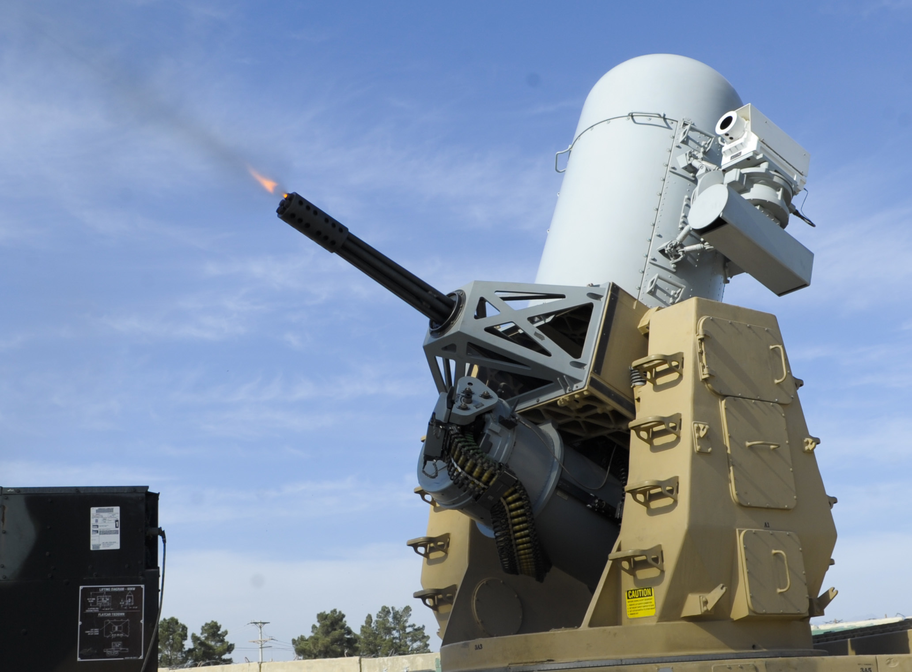
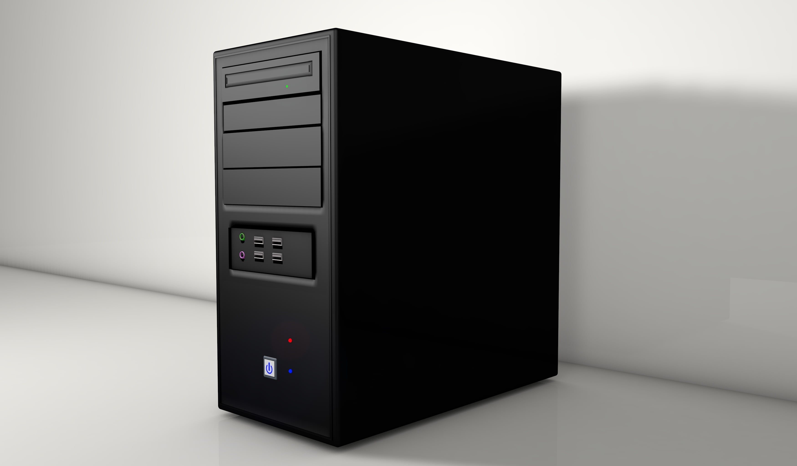
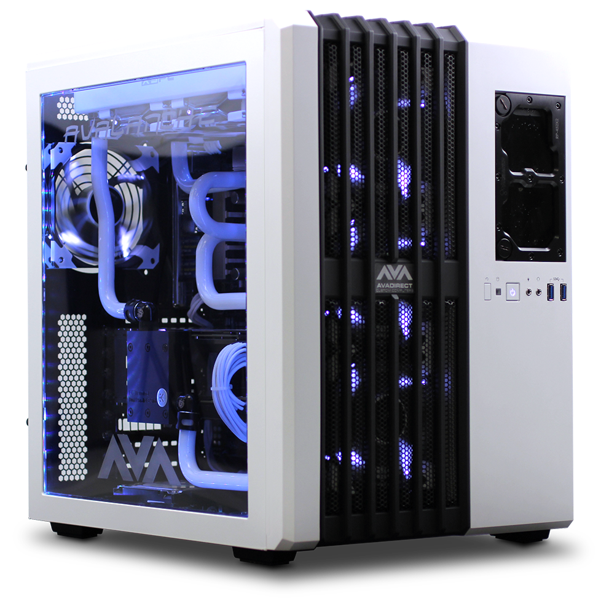
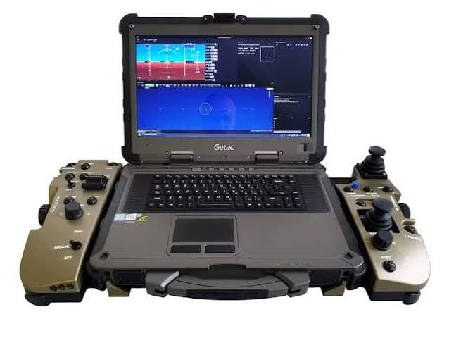

A Projekt Fő Témája: Harctéri Számítógép-Architektúra
A beadandó célja egy speciális számítógépes architektúra — a szárazföldi légvédelmi gépágyúk (pl. C-RAM vagy Gepard rendszerek) tűzvezető számítógépének — hardveres felépítésének, hibatűrésének és működési elveinek vizsgálata.
A témaválasztás indoka, hogy a harctéri környezetben használt célkövető hardverek tervezésekor a maximális nyers teljesítmény helyett a determinisztikus válaszidő, a fizikai strapabírás és a magas fokú redundancia a legfőbb tervezési szempont. Az oldalon található hiearchikus elrendezés és az összehasonlító elemzés bemutatja a kritikus katonai rendszerek és a civil hardverek közötti alapvető architektúrabeli eltéréseket.
Rendszerarchitektúra Áttekintés
Légvédelmi Gépágyú Tűzvezető Számítógép
Valós idejű operációs rendszer (RTOS), redundáns lockstep magok, ECC hibajavító memória, valamint EMP- és fizikai rázkódásállóság a miliszekundumos pontosságú célkövetésért.
Részletes elemzés megnyitása »

Irodai PC
Költséghatékony x86 hardver alapfeladatokra, mint belépési szintű viszonyítási alap.
Összehasonlítás »
High-End Gamer PC
Nyers grafikai teljesítmény és vízhűtés, ami zord harctéri körülmények között azonnal felmondná a szolgálatot.
Összehasonlítás »
Taktikai Drónvezérlő
Hordozható, strapabíró (Rugged) egység passzív hűtéssel és titkosítással.
Összehasonlítás »